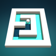

GlazeGlaze: Paint Maze Puzzle
Swipe the ball, roll through the maze and paint every tile. A calm 3D puzzle with stop pads, portals, one-way arrows and a daily challenge.
Support
How do I restore my purchases?
Open the Store (tap your coin balance) and tap Restore purchases. Use the same Apple ID you bought with. Glaze Premium is restored; coin packs are consumable and cannot be restored.
I lost my progress.
Progress is saved on your device only. Deleting the app deletes it.
I'm stuck on a level.
Every level can be solved. Tap the light bulb for a hint, or the undo button to take back a move.
Contact
Found a bug or have a question? Open an issue on GitHub.
Destek
Satın alımlarımı nasıl geri yüklerim?
Mağazayı açın (coin bakiyenize dokunun) ve Satın alımları geri yükle'ye dokunun. Satın aldığınız Apple kimliğini kullanın. Glaze Premium geri yüklenir; coin paketleri tüketilebilir olduğu için geri yüklenmez.
İlerlememi kaybettim.
İlerleme yalnızca cihazınızda saklanır; uygulamayı silmek ilerlemeyi de siler.
Bir seviyede takıldım.
Her seviye çözülebilir. İpucu için ampule, hamleni geri almak için geri al düğmesine dokun.
İletişim
Bir hata mı buldunuz ya da sorunuz mu var? GitHub'da bir konu (issue) açın.